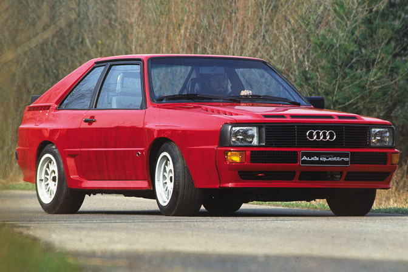
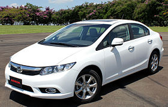

Mr Vehicle Man have over twenty years experience in Car cleaning in Carborough. Our staff are Mr Vehicle Man Approved qualified Car Valeters and have had extensive experience in cleaning the most challenging of vehicles. We specialise in full Car Valets as well as Mini Valets for keeping your car in top condition. Read more »
Audi Quattro

The Audi Quattro is a road and rally car, produced by the German automobile manufacturer Audi, now part of the Volkswagen Group. It was first shown at the 1980 Geneva Motor Show on 3 March. Production of the original version continued through 1991. Read more »
Honda Civic

The Honda Civic is a line of subcompact and subsequently compact cars made and manufactured by Honda. The Civic, along with the Accord and Prelude, comprised Honda's vehicles sold in North America until the 1990s, when the model lineup was expanded. Having gone through several generational changes, the Civic has become larger and more upmarket, and it currently slots between the Fit and Accord. Read more »
© 2010-11 www.MrVehicleGuy.co.uk